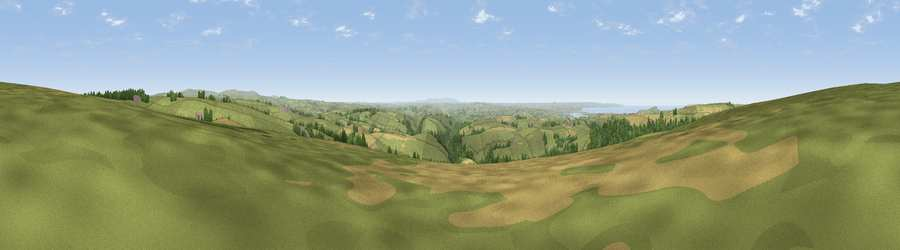

Viewpoint near Muddiford
#4465 in England · top 14% of its area beats it · near Muddiford · access?Where it is
The exact computed spot (SS 56525 40025). Click the marker for map links.
Public access: no public right of way or access land is recorded at this exact spot — it may be on private land. Computed from Natural England's CRoW access layer and OpenStreetMap rights of way — not the legal definitive map. Always verify locally.
The view, rendered

A 360° render of this exact spot computed from the terrain model, tree cover and land cover — summer colours, afternoon light, calibrated against photographs of famous viewpoints. Real trees, hedges and buildings will differ in detail.
The panorama
Grey silhouette: terrain skyline in each direction (720 bearings, Earth curvature and refraction included). Dashed green: skyline with trees (+15 m) and buildings (+8 m) as obstacles. Blue strip: how far the ground is visible on each bearing.
Where the view opens
Wedge length = distance to the farthest visible ground on that bearing (vegetation-aware). Rings at 10, 25 and 50 km.
What fills the view
68% grassland · 15% cropland · 14% woodland · 2% water ·
Angular shares of the visible panorama (visual magnitude), not map area. Landscape diversity 0.42 (0–1 Shannon).
Key numbers
More beautiful places nearby
The staircase of upgrades: each row has a higher view potential than everything closer. Driving times are estimates from straight-line distance, calibrated against real road routing — check an actual route before setting out.
| Place | Direction | Drive | Score |
|---|---|---|---|
| Berry Down | N · 4 km | ~10 min | 76.7 |
| Viewpoint near Berrynarbor | NNW · 5 km | ~11 min | 78.3 |
| Viewpoint near Berrynarbor | N · 7 km | ~14 min | 81.8 |
| Viewpoint near Combe Martin | NNE · 8 km | ~17 min | 86.9 |
| Viewpoint near Combe Martin | NNE · 9 km | ~17 min | 88.9 |
| Holdstone Hill | NNE · 9 km | ~18 min | 90.2 |
| The Knoll | ESE · 110 km | ~134 min | 91.0 |
51.14146, -4.05234 · source: screening · position refined by local search. Computed location — check access rights before visiting.